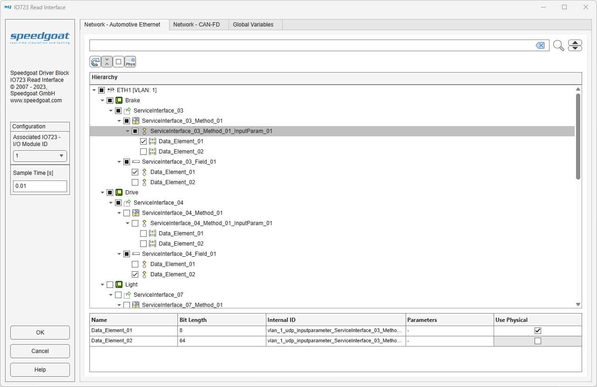
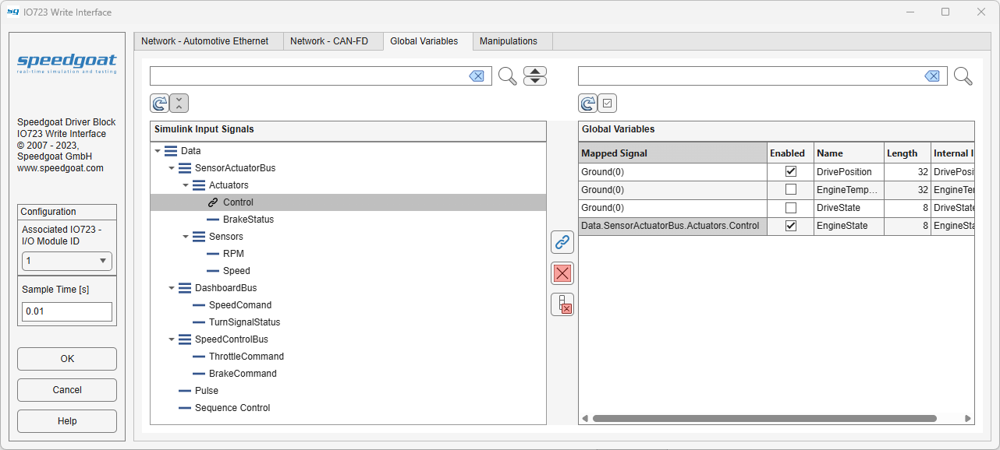

IO723 - Read Interface — IO723 Read Interface supporting database visualization and signal selection
The IO723 Read Interface block executes according to the settings in the IO723 Read Interface application. The execution primarily depends on the configured signal status (enabled or disabled) on the parsed database.
Each execution of an IO723 Read Interface block consists of one or more message payloads being retrieved from the block's software buffer.
Each Read Interface block can be configured using the application, which can be opened by double-clicking the block. The IO723 Read Interface application bridges RBS project signals to Simulink® model signals based on a manual signal status selection process. The RBS project must first be configured using the FL3X Config Softwareand the Setup block.
As an alternative to configuring the Read Interface block using the application, the IO723 Block Config class can be used to perform the mapping process programmatically.
The IO723 Read Interface block consists of a subsystem dynamically populated with output ports that construct a virtual bus, IO723 Read blocks and the interconnecting lines. Consequently, when an IO723 Read Interface block is placed in a model, the link to the library is broken.
Data received as a virtual bus structure. The bus structure is built from the hierarchy levels of the RBS project signal enabled. The top-level bus name is always the name of the Data output port. Only signals enabled in the IO723 Read Interface are output to the resulting bus. The size of the each signal is defined by the payload size described in the RBS project.
When configuring the interface, there is one tab for each communication protocol. In the RBS project, all available networks corresponding to one protocol are combined into one tab. Each tab can be configured differently from the others. The configuration settings of each tab are combined into one when applying the final configuration settings.

The Hierarchy shows a tree view of the RBS project structure. The icons indicate the node type in the according protocol structure. Nodes at any level can be enabled using the adjacent checkboxes. Enabling or disabling a node higher in the hierarchy will also automatically change the status of all subordinate nodes.
The Details table shows all the information available to the subordinate nodes of the node currently selected in the Hierarchy tree. No actions are available for this table.
The Hierarchy tree has a Search field available which will highlight nodes found in this tree. You can cycle through highlighted nodes using the up and down arrow buttons next to the search button. Clear the search field to clear the node highlighting.
The Refresh button will update the Hierarchy tree. Refreshing the Hierarchy tree will update the structure of the RBS project configured in the connected IO723 Setup block.
The Expand All Nodes state button will expand or collapse all nodes in the Hierarchy tree depending on the state of the button.
The Check All Nodes state button will check or uncheck all nodes in the Hierarchy tree depending on the state of the button.
The Check Selected Use Physical state button will check or uncheck all Use Physical properties of selected nodes in the Hierarchy tree depending on the state of the button. Nodes with Use Physical enabled will process the values of received signals as physical and if disabled process them as raw byte arrays. The physical attributes for processing a signal with Use Physical enabled are defined in the RBS project.
When configuring the interface, there is a tab for retrieving values for global variables. In the RBS project, all available global variables are combined into one tab.

The Global Variables shows a table view of the global variables defined in the RBS project structure. Access to retrieving the value of a global variable can be enabled using the adjacent checkbox.
The Global Variables table has a Search field available. Any rows found will be highlighted in the table. Clear the search field to clear the row highlighting. Rows are searched based on their Name only.
The Refresh button will update the Global Variablestable, based on the structure of the RBS project configured in the connected IO723 Setup block.
The Check All Variables state button will check or uncheck all variables in the Global Variables table depending on the state of the button.